|
|
HELP FIND THE FOLLOWING LOCATIONS
PAGE 67
THE
SAINT: The Angel's Eye (Leslie Norman: March 1966)
Unknown 1 - Malone
(T.P. McKenna) arrives in the woods opposite Cranmore
House and whistles for Corbett (Frederick Abbott) who has been staking
out the
house.
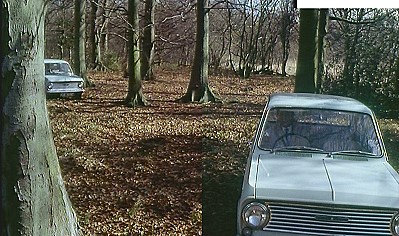
Unknown 2 - Malone (T.P. McKenna) and Corbett (Frederick Abbott) attempt to break into the grounds of Cranmore House by climbing a high wall, but they are interrupted by the appearance of Jeremy Cranmore in his Lotus. After attempting to steal the Angel's Eye diamond they are chased from the house by Simon Templar (Roger Moore) and Jeremy Cranmore (Donald Pickering), but they fail to prevent Malone and Corbett climbing the wall and making their getaway.
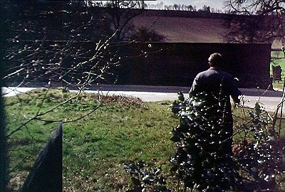
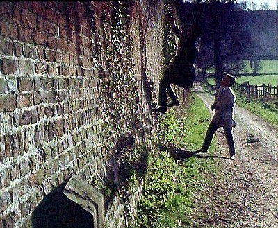
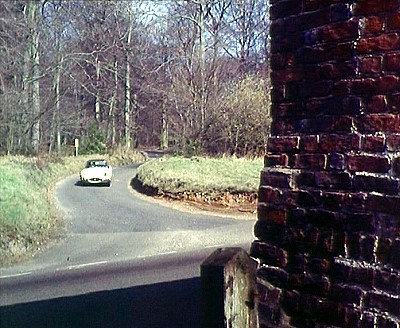
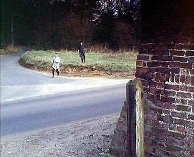
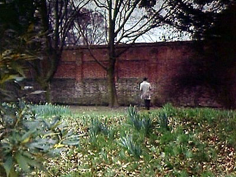
G30:
Trent Park, Cockfosters Road, Enfield
- Malone and
Corbett watch as Jeremy Cranmore
arrives at the gates of Cranmore
House in his Lotus.
The gates are opened by the park ranger and he drives through.
(Identified by David Solan,
April 2011)
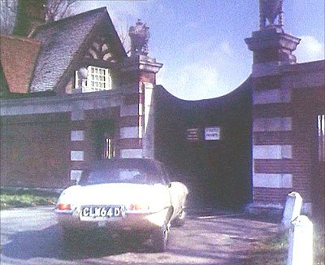

THE
SAINT: Marcia (John Krish:
1963)
C26: M1
Junction 10
-Simon
Templardrives to Birmingham from London to interview Frank
Landon
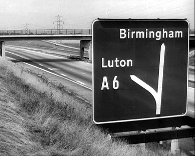
C27: M1 Junction 8 -Simon Templar drives to Birmingham from London to interview Frank Landon
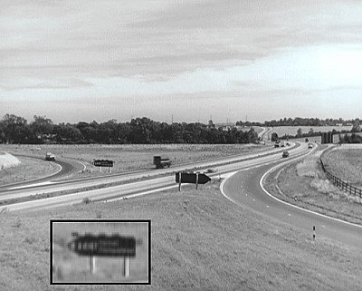
Unknown 2 -Simon Templar drives to Birmingham from London to interview Frank Landon
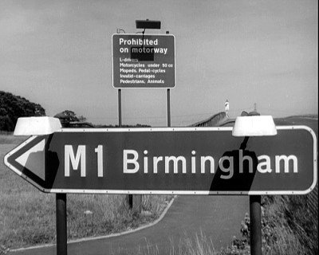
Nutt
Grove,
off Edgware Way-
Simon Templer
arrives in his Volvo at the Reeland
Nursing Home to
interview Frank Landon.
(Identified by Simon Coward, March 2010)
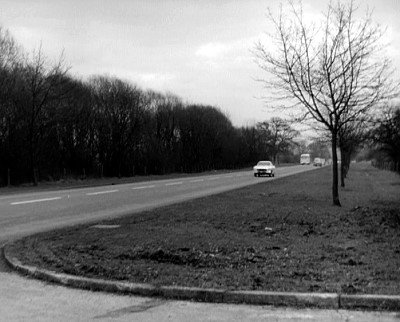
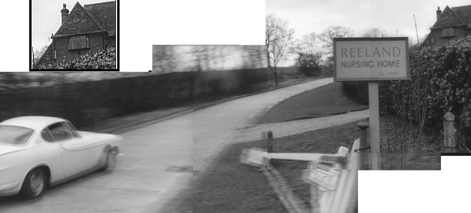
Unknown 5 - Claire Avery's flat.
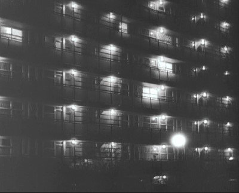
Think you know a spot? Need a bigger image? Email me.
< Previous | Index | Avengerland | Next >
Copyright © 2022 Anthony R. McKay